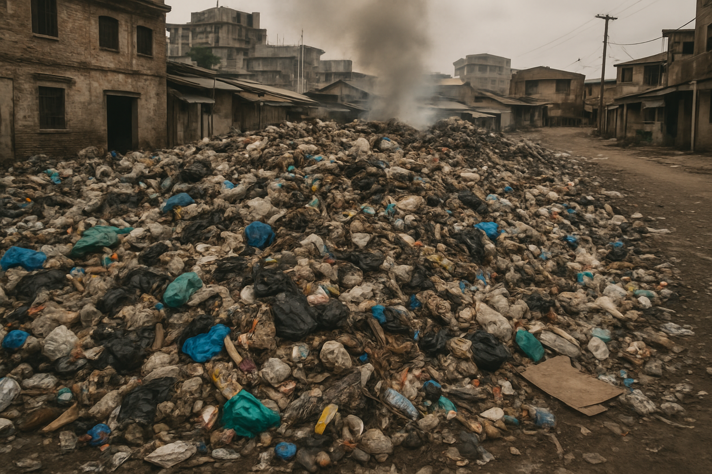
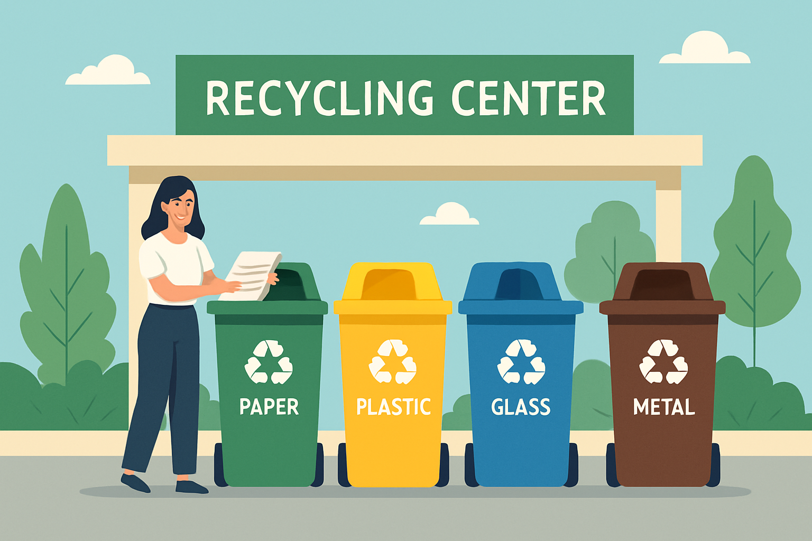
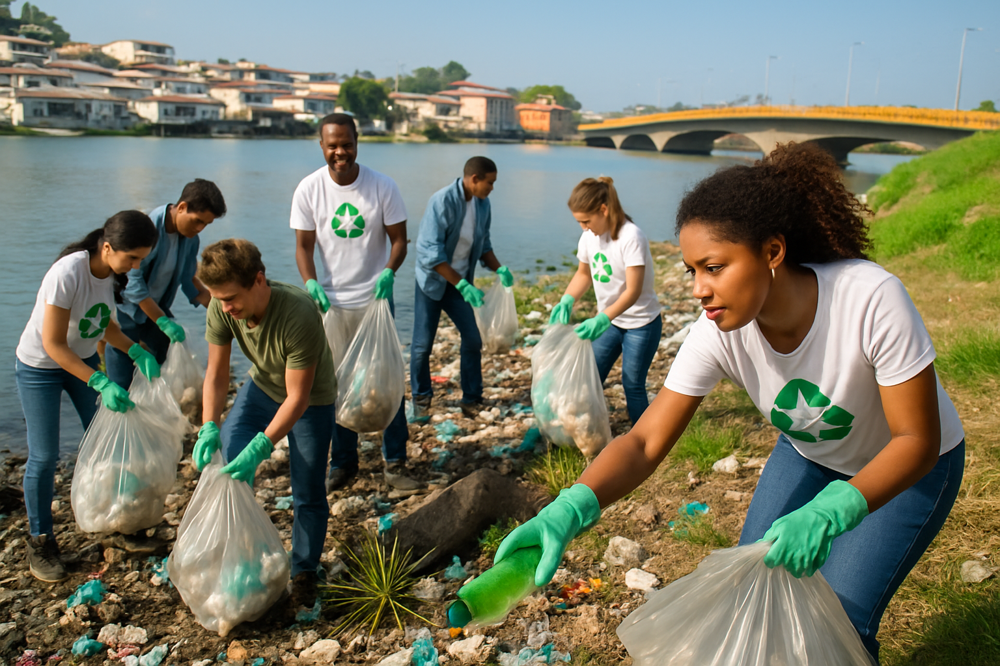

Causas do Problema
O estado do Pará enfrenta sérios desafios na gestão de resíduos sólidos, reflexo de problemas estruturais e sociais que afetam diretamente o meio ambiente e a qualidade de vida da população.
1,5 mil
toneladas de lixo/dia em Belém
3-4%
taxa de reciclagem no Brasil
- Crescimento urbano descontrolado: Belém produz cerca de 1,5 mil toneladas de lixo por dia
- Infraestrutura deficiente: Muitos municípios ainda utilizam lixões a céu aberto
- Baixa taxa de reciclagem: Apenas 3-4% dos resíduos são reaproveitados
- Falta de educação ambiental: População carece de informação sobre separação correta

Consequências Graves
A má gestão de resíduos no Pará gera impactos ambientais, sociais e econômicos devastadores que afetam toda a população.
Impacto Financeiro
O Brasil gasta cerca de R$ 90 bilhões por ano com externalidades da má gestão de lixo. Se nada for feito, esse valor pode ultrapassar R$ 130 bilhões em 2050.
- Contaminação do solo e água: Chorume contamina lençóis freáticos
- Poluição do ar: Queima de lixo causa problemas respiratórios
- Doenças: Proliferação de vetores transmissores de dengue e leptospirose
- Exclusão social: Catadores trabalham em condições insalubres
Soluções em Andamento
O Pará está implementando diversas iniciativas para melhorar a gestão de resíduos e construir um futuro mais sustentável.

- Centro de Gestão Integrada: Rondon do Pará com 96% das obras concluídas
- Comitê de Economia Circular: Belém integra gestão de resíduos e economia circular
- Campanhas educativas: "Praia Limpa, Alter Mais Bonita" em Santarém
- Aterros sanitários adequados: Substituição gradual dos lixões
Como Você Pode Ajudar
Cada cidadão tem um papel fundamental na transformação da gestão de resíduos. Pequenas ações individuais geram grandes impactos coletivos.

- Separe corretamente o lixo orgânico do reciclável
- Reduza o consumo de produtos descartáveis
- Reutilize materiais sempre que possível
- Participe de campanhas de limpeza comunitária
- Faça compostagem dos resíduos orgânicos
- Eduque familiares e amigos sobre práticas sustentáveis
- Cobre das autoridades melhorias na coleta seletiva